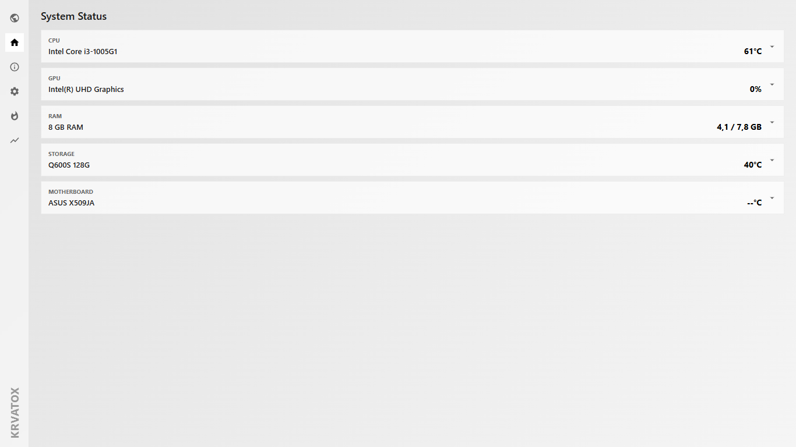
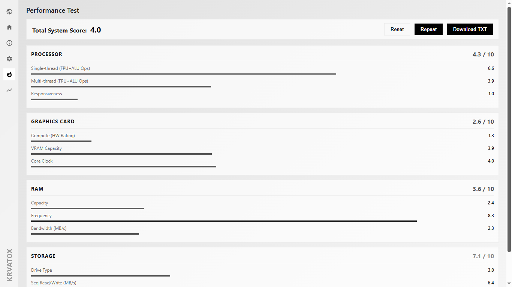
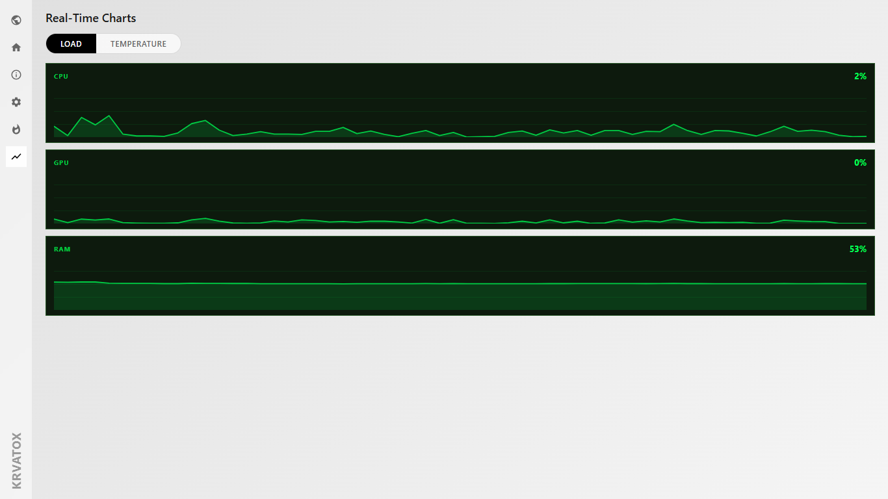

Программа для мониторинга ПК
PC Monitoring Software
PC-Monitoring-Software
Logiciel de surveillance PC
Software de Monitoreo de PC
电脑硬件监控软件
PC 모니터링 소프트웨어
PCモニタリングソフトウェア
Утилита отображает рабочие параметры процессора, видеокарты, накопителей и оперативной памяти, а также предоставляет оверлей FPS в играх.
The utility displays operating parameters of the processor, graphics card, drives, and RAM, and features an in-game FPS HUD overlay.
Das Dienstprogramm zeigt Betriebsparameter von Prozessor, Grafikkarte, Festplatten und Arbeitsspeicher an und bietet eine FPS-Anzeige in Spielen.
L'utilitaire affiche les paramètres de fonctionnement du processeur, de la carte graphique, des disques et de la mémoire RAM, ainsi qu'un overlay FPS en jeu.
La utilidad muestra los parámetros de funcionamiento del procesador, tarjeta gráfica, discos y memoria RAM, así como una superposición HUD de FPS en juegos.
该工具可实时显示处理器、显卡、硬盘和内存的运行参数，并支持游戏内 FPS HUD 悬浮窗。
이 유틸리티는 프로세서, 그래픽 카드, 드라이브 및 RAM의 작동 매개변수를 표시하며 게임 내 FPS HUD 오버레이 기능을 제공합니다.
プロセッサ、グラフィックボード、ストレージ、メモリの動作パラメータを表示し、ゲーム内でのFPS HUDオーバーレイ機能も備えています。
Скачать установщик Download Installer Installer herunterladen Télécharger l'installateur Descargar Instalador 下载安装程序 설치 프로그램 다운로드 インストーラーをダウンロードВозможности программы
Software Features
Software-Features
Fonctionnalités du logiciel
Características del Software
软件功能
소프트웨어 기능
ソフトウェア機能
Поддерживаемые компоненты и параметры
Supported Components & Parameters
Unterstützte Komponenten & Parameter
Composants & Paramètres Supportés
Componentes y Parámetros Soportados
支持的组件与参数
지원되는 구성 요소 및 매개변수
サポートされているコンポーネントとパラメータ
| Аппаратный узелHardware NodeHardware-KnotenComposant MatérielComponente de Hardware硬件节点하드웨어 노드ハードウェア・ノード | Контролируемые метрики телеметрииMonitored Telemetry MetricsÜberwachte Telemetrie-MetrikenMétriques de Télémétrie SurveilléesMétricas de Telemetría Monitoreadas监控的遥测指标모니터링되는 원격 측정 지표監視されるテレメトリ・メトリクス |
|---|---|
| Процессор (CPU)Processor (CPU)Prozessor (CPU)Processeur (CPU)Procesador (CPU)处理器 (CPU)프로세서 (CPU)プロセッサ (CPU) | Нагрузка по ядрам, частота в реальном времени, температура ядер, энергопотребление (TDP), напряжение. Core utilization, real-time clock speed, core temperatures, total power consumption (TDP), core voltage. Auslastung der einzelnen Kerne, Echtzeit-Taktrate, Kerntemperaturen, Gesamte Leistungsaufnahme (TDP), Kernspannung. Utilisation des cœurs, fréquence en temps réel, températures des cœurs, consommation totale (TDP), tension du cœur. Uso por núcleo, velocidad de reloj en tiempo real, temperaturas de núcleos, consumo total de energía (TDP), voltaje de núcleo. 核心负载、实时主频、核心温度、总功耗 (TDP)、核心电压。 코어별 부하, 실시간 클럭 속도, 코어 온도, 총 소비 전력 (TDP), 코어 전압. コア別の負荷、リアルタイムの動作周波数、コア温度、総消費電力（TDP）、コア電圧。 |
| Видеокарта (GPU)Graphics Card (GPU)Grafikkarte (GPU)Carte Graphique (GPU)Tarjeta Gráfica (GPU)显卡 (GPU)그래픽 카드 (GPU)グラフィックボード (GPU) | Частота чипа и видеопамяти, температура чипа и HotSpot, выделенная и занятая VRAM, скорость вентиляторов (RPM). Core and memory clock speed, chip and HotSpot temperatures, allocated and used VRAM, fan speed (RPM). Taktfrequenz von Grafikchip und Videospeicher, chip- und HotSpot-Temperatur, zugewiesener und belegter VRAM, Lüfterdrehzahl (RPM). Fréquence du cœur et de la mémoire, température du puce et du HotSpot, VRAM allouée et utilisée, vitesse des ventilateurs (RPM). Frecuencia de reloj de núcleo y memoria, temperatura del chip y HotSpot, VRAM asignada y utilizada, velocidad del ventilador (RPM). 核心及显存频率、核心与 HotSpot 温度、已分配和已用 VRAM、风扇转速 (RPM)。 코어 및 메모리 클럭 속도, 칩 및 HotSpot 온도, 할당 및 사용된 VRAM, 팬 속도 (RPM). コアおよびメモリの動作周波数、チップおよびHotSpotの温度、割り当て済み/使用中のVRAM、ファン回転数（RPM）。 |
| Оперативная память (RAM)RAM MemoryArbeitsspeicher (RAM)Mémoire RAMMemoria RAM运行内存 (RAM)작동 메모리 (RAM)メインメモリ (RAM) | Общий объем, занятый и свободный объем в мегабайтах, процентная нагрузка, скорость передачи данных. Total physical memory, used and free space in megabytes, utilization percentage, data transfer throughput. Gesamter physischer Speicher, belegter und freier Speicherplatz in Megabyte, prozentuale Nettoauslastung, Datendurchsatzgeschwindigkeit. Mémoire physique totale, espace utilisé et libre en mégaoctets, pourcentage d'utilisation, débit de transfert. Memoria física total, espacio usado y libre en megabytes, porcentaje de uso, velocidad de transferencia de datos. 总物理内存、已用和可用空间 (MB)、利用率百分比、数据传输速率。 총 물리 메모리, 메가바이트 단위의 사용 및 여유 공간, 부하율 백분율, 데이터 전송 속도. 総物理メモリ、メガバイト単位の使用中/空き容量、負荷率の割合、データ転送速度。 |
| Накопители (SSD / HDD)Storage Drives (SSD / HDD)Speicherlaufwerke (SSD / HDD)Disques de StockageUnidades de Almacenamiento存储驱动器 (SSD / HDD)저장 드라이브 (SSD / HDD)ストレージ（SSD / HDD） | Текущая рабочая температура, скорость последовательного чтения и записи, мониторинг операций ввода-вывода (IOPS). Current operating temperature, sequential read and write speeds, monitoring of input/output operations per second (IOPS). Aktuelle Betriebstemperatur, sequentielle Lese- und Schreibgeschwindigkeit, Überwachung der Ein-/Ausgabeoperationen pro Sekunde (IOPS). Température de fonctionnement actuelle, vitesses de lecture/écriture séquentielles, surveillance des opérations d'entrée/sortie par seconde (IOPS). Temperatura de funcionamiento actual, velocidades de lectura/escritura secuenciales, monitoreo de operaciones de E/S por segundo (IOPS). 当前工作温度、顺序读取和写入速度、每秒输入/输出操作数 (IOPS) 监控。 현재 작동 온도, 순차 읽기 및 쓰기 속도, 초당 입출력 작업 수 (IOPS) 모니터링. 現在の動作温度、シーケンシャル読み込み/書き込み速度、1秒あたりの入出力操作数（IOPS）の監視。 |
Технические спецификации и требования
Technical Specifications & Requirements
Technische Spezifikationen und Anforderungen
Spécifications Techniques & Exigences
Especificaciones Técnicas y Requisitos
技术规格与系统要求
기술 사양 및 요구 사항
技術仕様および要件
| КритерийCriterionKriteriumCritèreCriterio指标名称기준基準 | Спецификация и совместимостьSpecification & CompatibilitySpezifikation und KompatibilitätSpécification & CompatibilitéEspecificación y Compatibilidad规格参数与兼容性사양 및 호환성仕様および互換性 |
|---|---|
| Операционная sistemaOperating SystemBetriebssystemSystème d'ExploitationSistema Operativo操作系统운영 체제オペレーティングシステム | Windows 10 / Windows 11 (Исключительно 64-bit) Windows 10 / Windows 11 (64-bit versions only) Windows 10 / Windows 11 (Ausschließlich 64-Bit-Versionen) Windows 10 / Windows 11 (Versions 64 bits uniquement) Windows 10 / Windows 11 (Solo versiones de 64 bits) Windows 10 / Windows 11 (仅限 64 位版本) Windows 10 / Windows 11 (64비트 버전 전용) Windows 10 / Windows 11 (64ビットバージョンのみ) |
| Платформа и разработкаPlatform & DevelopmentPlattform & EntwicklungPlateforme & DéveloppementPlataforma y Desarrollo开发平台플랫폼 및 개발プラットフォームと開発 | Разработано на базе .NET 10.0; интерфейс построен на Windows Forms Framework Developed on the .NET 10.0 runtime environment; user interface built with Windows Forms Framework Entwickelt auf Basis der .NET 10.0 Laufzeitumgebung; Benutzeroberfläche basiert auf dem Windows Forms Framework Développé sur l'environnement d'exécution .NET 10.0 ; interface utilisateur basée sur Windows Forms Framework Desarrollado sobre el entorno de ejecución .NET 10.0; interfaz de usuario basada en Windows Forms Framework 基于 .NET 10.0 运行环境开发；用户界面构建于 Windows Forms 框架 .NET 10.0 런타임 환경을 기반으로 개발됨; 사용자 인터페이스는 Windows Forms 프레임워크 기반 .NET 10.0 ランタイム環境をベースに開発。ユーザーインターフェースは Windows Forms フレームワークで構築 |
| Необходимые компонентыRequired ComponentsErforderliche KomponentenComposants RequisComponentes Requeridos必要组件필수 구성 요소必要なコンポーネント | Для корректного отображения игрового оверлея требуется запущенный в фоне RivaTuner Statistics Server (RTSS) Correct rendering of the in-game overlay requires RivaTuner Statistics Server (RTSS) running actively in the background Für die korrekte Darstellung des In-Game-Overlays ist eine aktive Ausführung des RivaTuner Statistics Server (RTSS) im Hintergrund erforderlich L'affichage correct de l'incrustation en jeu nécessite l'exécution en arrière-plan du RivaTuner Statistics Server (RTSS) La representación correcta de la superposición en juego requiere que RivaTuner Statistics Server (RTSS) se ejecute activamente en segundo plano 为确保游戏内悬浮窗的正确渲染，需要后台保持 RivaTuner Statistics Server (RTSS) 处于运行状态 게임 내 오버레이를 올바르게 렌더링하려면 RivaTuner Statistics Server(RTSS)가 백그라운드에서 활성화되어 실행 중이어야 합니다. ゲーム内オーバーレイを正しく描画するには、バックグラウンドで RivaTuner Statistics Server（RTSS）がアクティブに実行されている必要があります |
- • Важно: Для запуска требуются права администратора, чтобы корректно инициализировать низкоуровневые драйверы опроса датчиков температуры. • Important: Administrator privileges are required at startup to correctly initialize low-level drivers for reading hardware temperature sensors. • Wichtig: Zum Starten sind Administratorrechte erforderlich, um die Low-Level-Treiber für das Auslesen der Temperatursensoren korrekt zu initialisieren. • Important : Les privilèges d'administrateur sont requis au démarrage pour initialiser correctement les pilotes de bas niveau pour la lecture des capteurs de température. • Importante: Se requieren privilegios de administrador al iniciar para inicializar correctamente los controladores de bajo nivel para leer los sensores de temperatura. • 重要提示：启动时需要管理员权限，以便正确初始化用于读取温度传感器的底层驱动程序。 • 중요: 하드웨어 온도 센서를 읽기 위한 하위 수준 드라이버를 올ба르게 초기화하려면 시작 시 관리자 권한이 필요합니다. • 重要：温度センサーを読み取るための低レベルドライバーを正しく初期化するには、起動時に管理者権限が必要です。
- • Конфиденциальность: Программа обрабатывает все данные локально. Сбор, хранение или отправка профилей пользователей и статистики отсутствуют. • Privacy: The application processes all data locally. There is no collection, storage, or transmission of user profiles or telemetry usage statistics. • Datenschutz: Das Programm verarbeitet alle Daten lokal. Es werden keine Benutzerprofile, Telemetriedaten oder Nutzungsstatistiken gesammelt oder übertragen. • Confidentialité : L'application traite toutes les données localement. Aucun profil utilisateur ou statistique d'utilisation n'est collecté, stocké ou transmis. • Privacidad: La aplicación procesa todos los datos localmente. No existe recopilación, almacenamiento ni transmisión de perfiles de usuario o estadísticas de uso. • 隐私安全：程序完全在本地处理所有数据。不收集、不存储、亦不向外传输任何用户配置文件或遥测使用统计。 • 개인정보 보호: 애플리케이션은 모든 데이터를 로컬에서 처리합니다. 사용자 프로필이나 원격 측정 사용 통계의 수집, 저장 또는 전송이 일체 없습니다. • プライバシー：アプリケーションはすべてのデータをローカルで処理します。ユーザープロファイルやテレメトリの使用統計の収集、保存、送信は一切行われません。
Скриншоты программы
Software Screenshots
Software-Screenshots
Captures d'écran du logiciel
Capturas de Pantalla del Software
软件截图
소프트웨어 스크린샷
ソフトウェアのスクリーンショット


